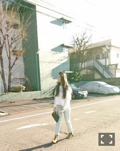
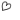

| 2016/03 30 Wed | 痛み最強説_(．．*)vol.74 |
みなさんこんばんはー！
さがらいおりです！
グアムのピザたち
これ、美味しかったーーーーー
2期生 3周年
私も3周年に参加できる
幸せ
改めてみんなのこと好きだなと
思います
みんなが頑張ってる
3期生くる、
私もっと頑張る
というか、頑張らなきゃる
グアムかぶれ
前回のブログのコメント読んでて
皆さんが卒業おめでとうって書いて下さってて
｢あー、高校卒業したんだなー｣
って思いました。
卒業式に出てないので
全然実感が無かったのですが
なんか、、
やっと実感しました
もう学生じゃなくなるって
怖いですね。
これからも
沢山の応援よろしくお願いします(^^)！
ハリセンと
個人PVの撮影終わりで頂いたお花です。
すっごい大きな花束で
素敵な色で帰ってすぐに
リビングに飾りました♡
最近はよく映画観てます、
最近観た映画は
｢マイ・インターン｣
｢きっと、星のせいじゃない。｣
｢ホステル2｣
あと、結構前だけど
｢チョコレートドーナツ｣も観ました！
チョコレートドーナツは
いい映画でしたぁ、
泣けます(；；)
~いおり庵~
 プリンはぷるんとしてるのと
プリンはぷるんとしてるのと
とろっとしてるのどっちが好きかな？
んー、迷う＞＜
とろっとしてる方が好きかな
でもなんだかんだ
お母さんが作ってくれるプリンが
1番好きなのー♡
お寿司で好きなネタは？
中トロ～
白子の天ぷら好きなんだぁ
レッスン着はどこの使ってる？
ユニクロのスウェットだよ！
Tシャツは安室奈美恵さんのツアーTを着てる！
あと、生誕Tとか
乃木坂のTシャツとかかな(^^)
オールナイトニッポン０
三四郎さん継続ーーー！！！
嬉しい♡♡
毎回聴いてます♡バチボコ大好きです♡
まいちゅん！生放送！
ファイト！
私ももう出れるから、
いつか呼んでね( -_-)♡♡
そして新パーソナリティーに
ニューヨークさん！！！
楽しみすぎる♪♪♪
4月から楽しみばっかだ♡
でもねでもね、
村本さんのオールナイトニッポン
終わっちゃったのーーー(；；)
がびーーーん
ショックーー(；；)
また聴ける日がきますように。
お誕生日おめでとうございます♡
3月お誕生日の方は教えてね！！
 楽天SHOWTIME 乃木坂ゴルフ倶楽部
楽天SHOWTIME 乃木坂ゴルフ倶楽部
新しく更新されました！
GREEN GORA 発売中
SamuraiELO 発売中
美女散歩の連載です！

カフェ巡りにハマってるって言ったら、
オススメのカフェを教えてもらったので
今度行ってこようと思います♪♪
UPDATEgirls 3/31 発売
UTB＋ 4/9 発売
MARQEE 4/10 発売
よろしくお願いしますm(_ _)m
i o r i .

コメント(282)
2016/03/30 20:54